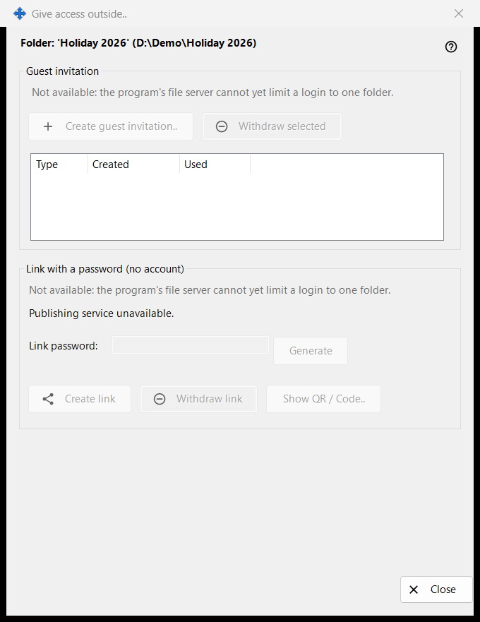
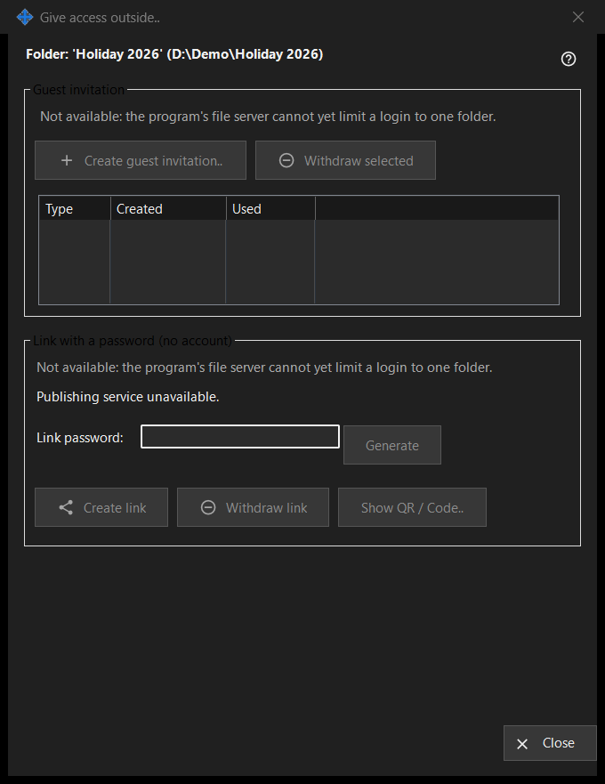

Give access outside
What this is for
Controls access to one shared folder for people outside your own devices: a guest invitation, or a link with a password that needs no account. It opens from the 'Give access outside..' button of the Share Manager main window for the selected folder. In this version the controls that create new access are off and the window shows the reason, while access that already exists can still be withdrawn.


In this order
- Read the header line with the folder name and path.
- In each group read the reason line; while it is shown nothing new can be created.
- To remove access, select an invitation and press 'Withdraw selected', or press 'Withdraw link'.
- Press 'Close' (Escape) to leave.
The elements
Folder and status
The bold line names the folder and its path. The status line at the bottom reports the last result. When the publishing service is not running, the window says 'Publishing service unavailable.' and its buttons are off.
Guest invitation
The group has 'Create guest invitation..', 'Withdraw selected' and a list with Type, Created and Used for the guest invitations of this folder. Withdrawing removes the invitation; it does not delete the folder or its files.
Link with a password (no account)
The status reads 'Link not created.' or 'Link is active.' The 'Link password:' box is masked and 'Generate' fills it. 'Create link' becomes 'Update link' while a link is active. 'Withdraw link' asks first, because every active session on the link ends. 'Show QR / Code..' shows the link as a code.
Why creating is off
Each group shows a reason line saying that the program's file server cannot limit a login to one folder. While it is shown, all controls that create invitations or links are disabled. Withdrawing existing access depends only on what exists.
Manager settings · SFTP sharing settings · Exchange server settings